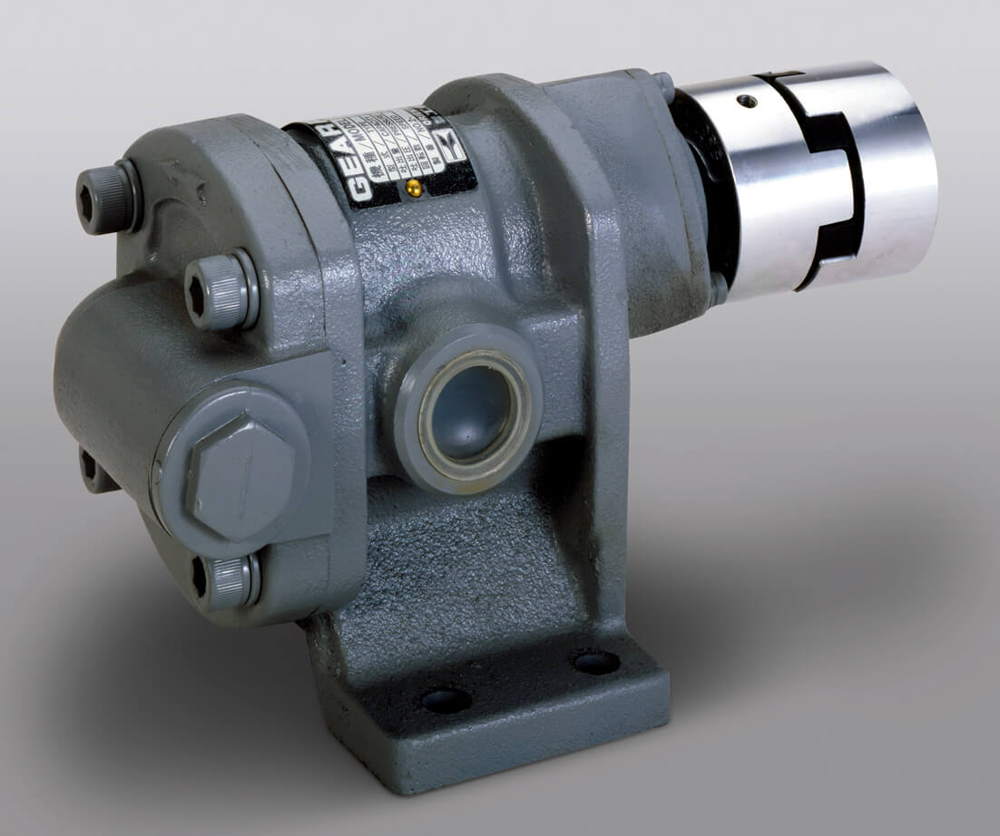
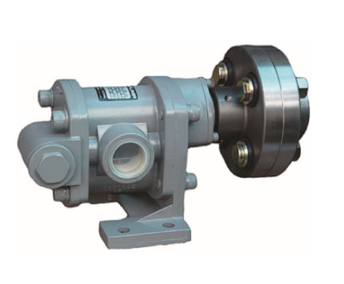
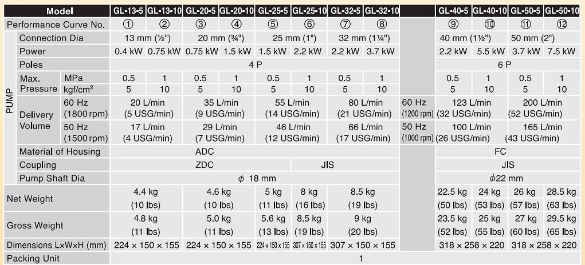
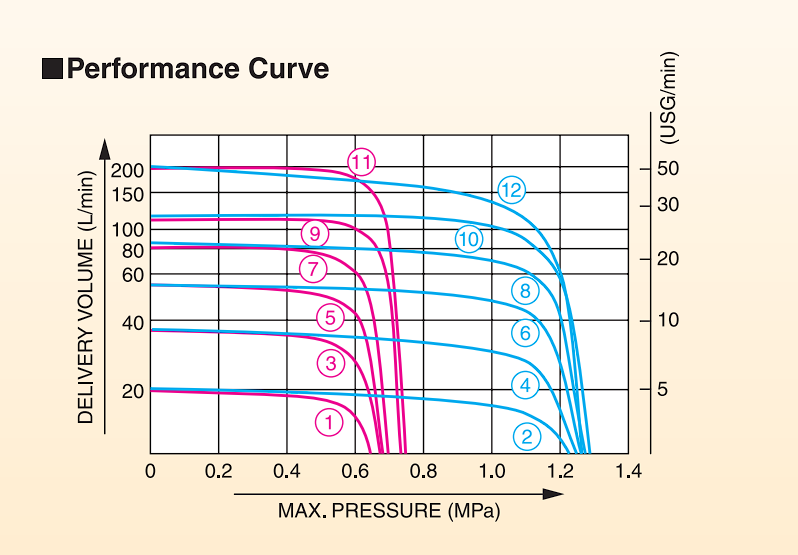

Trusted engineering excellence for the world's toughest pumping challenges
KOSHIN – Driving Global Progress with Precision and Innovation Since 1948.

Koshin GL Series represents the pinnacle of end-suction centrifugal pump technology, combining robust construction with energy-efficient performance.



The Koshin GL Gear Pump is a compact and robust solution for oil transfer, chemical processing, and industrial lubrication systems.